Step 4: Testing By Simulation
Contents
- Introduction
- Verification and Validation Tools Used
- Simulink Test Overview
- Test Harness Introduction
- Creating a Test Harness at the Subsystem Level
- Creating a Test Harness at the Model Level
- Importing Test Vectors
- Completing the Test Harness Model
- Executing the Functional Tests and Analyzing the Results
- Test Sequence Blocks for Inputs and Online Assessment
- Simulink Test Manager Overview
- Importing a Test Harness into the Test Manager
- Introduction to the Model Coverage Concept
- Collecting Model Coverage From Functional Test Cases
- Using the Model Coverage Results
- Summary
Introduction
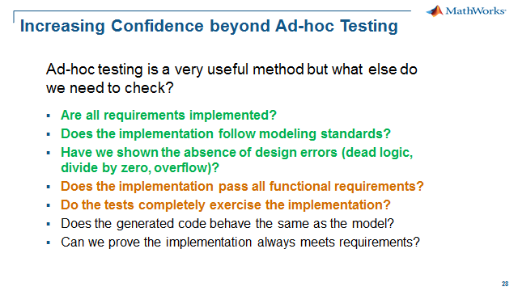
The most common verification method is to actually execute the algorithm or program, i.e. so called dynamic testing. In Simulink this is done using simulation by simply pressing PLAY, or what we covered in the first step of the workshop, Ad-hoc Testing. This step takes a more formalized, structured approach to dynamic testing, goes beyond ad-hoc testing to answer the next questions:
- Does the implementation pass all functional requirements?
- Do the tests completely exercise the implementation?
Dynamic testing involves creating a set of test vectors based on the functional requirements, and ensuring that the algorithm output meets the expected output. However, determining that the algorithm behaves as expected is only part of the overall test objectives. Another vital part is to get information about how much of the algorithm has been covered by the test cases. In Simulink, you can do this by enabling model coverage measurements during simulation. Model coverage is able to tell us whether or not we have achieved a "minimal" amount of testing. For example, if we have not reached 100% decision coverage, we have not exercised or tested 100% of our model.
In this section, we will see how we can quickly build up a test environment by creating a test harness model, capturing model coverage information and verify that our test results meet our expected outputs. We will use the test harness to debug the model when we fail the functional testing. Model coverage results will also help the debugging effort but more fundamentally it will provide an additional check that the implementation matches the requirements beyond the previous traceability discussion.
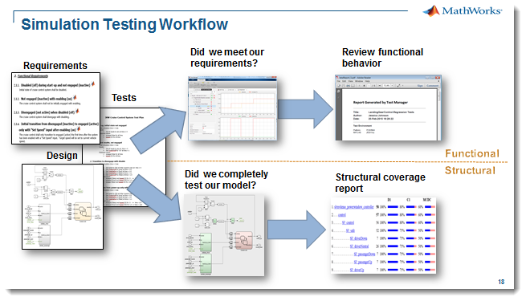
Verification and Validation Tools Used
- Simulation Data Inspector (part of Simulink)
- Simulink Verification and Validation
- Simulink Test
Simulink Test Overview
In this step we will use the features of Simulink Test to perform the dynamic testing of our cruise controller. Simulink Test supports interactive testing of the model with creation and management of test harnesses. To create input vectors for use in the harness we will mostly use Signal Builder and a brief example of using a test sequence block from Simulink Test. For evaluation we will introduce the use of a another instance of a test sequence block. And lastly we will use the test manager of Simulink Test to automate the execution, evaluation and reporting of our results.
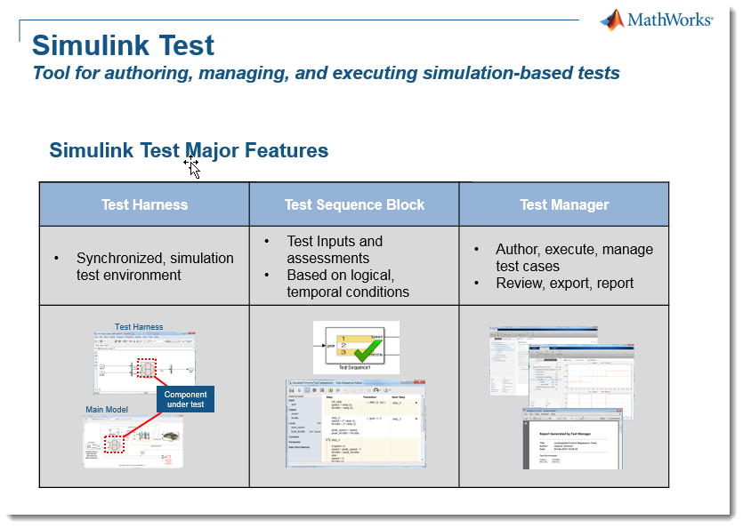
Test Harness Introduction
Simulink Verification and Validation contains several functions that help the user create test harness models to facilitate the dynamic functional testing. The test harness provides an environment to:
- Import test cases
- Link to requirements
- Execute the tests
- Evaluate the results
- Debug the failed tests
- Measure test completeness
In the past, to create the test harness we would have used the slvnvmakeharness function provided in the Simulink Verification and Validation toolbox. An identical function sldvmakeharness is provided with the Simulink Design Verifier toolbox. But we will use the new test harness creation feature provided by Simulink Test.
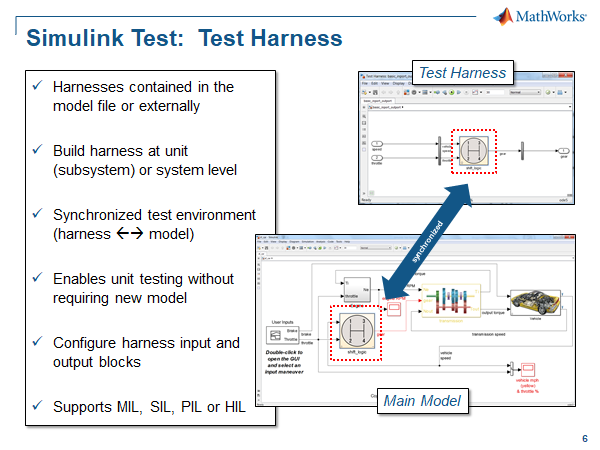
Creating a Test Harness at the Subsystem Level
One of the features supporting algorithm development and testing is the ability to create a test harness at the subystem level. In the past the algorithm developer would need to extract the subystem, manually create the harness and coordinate any changes between the main model and the harnessed subsystem. With Simulink Test these steps are automated and managed.
Based on field testing of the Cruise Control, an issue was found by pressing both the "CoastSetSw" and the "AccelResSw" simultaneously. The Cruise Control target speed was increased but this was not specified in the requirements, in fact it was missing. A new design was created to ignore the simultaneous input by implementing a subystem to condition the two inputs to be rejected.
To examine the design and create the subsystem harness, do the following:
1. Open "CruiseControl.slx" with the subsystem redesign - click here.
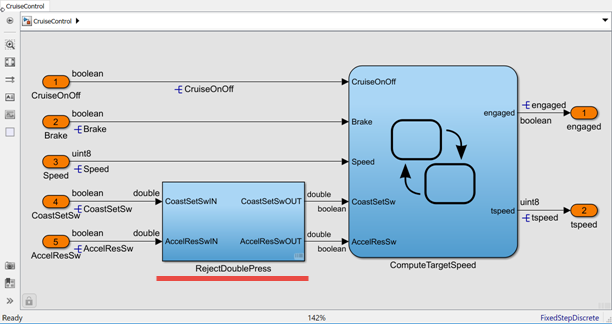
2. Open the "RejectDoublePress" subsystem to examine the design.
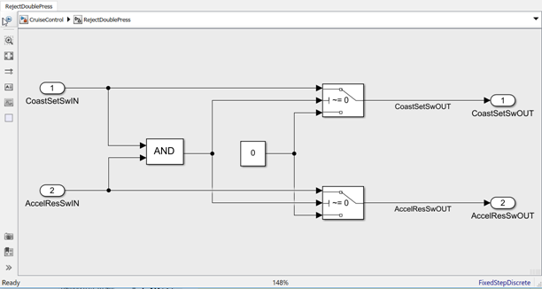
3. Navigate to the top model. Right-click on the "RejectDoublePress" subsystem and select *
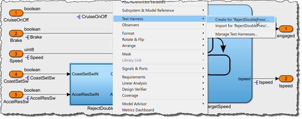
4. Enter "RejectDoublePress_Wkshp_Harness" as the Name and select Constant as the source to create a harness to test the design interactively.
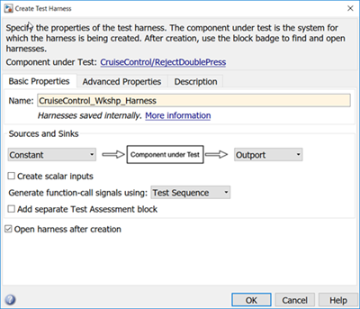
Once the harness has opened we can see the subsystem has been extracted from the main model. To complete the harness we can add "dashboard" blocks to control the inputs and monitor the outputs. The next step will detail the creation of a test harness. For this section, we will focus on the subsystem testing workflow with an existing interactive test harness.
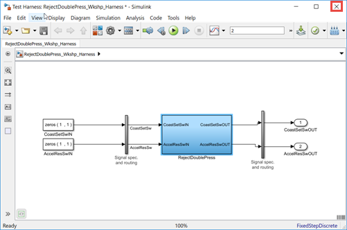
5. Close the harness by closing the window, and open the existing "RejectDoublePress_Adhoc_Harness".
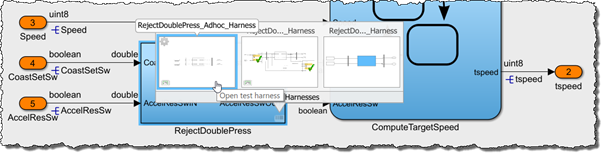
6. Run the test harness to see if it behaves as intended.
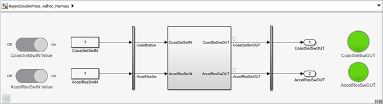
Based on the testing, the design is behaving exactly opposite to what was intended. It is rejecting single inputs and letting simulataneous input pass through to "ComputeTargeSpeed".
7. To fix the design, modify the "AND" block to a "NAND" block. Check the modified design for intended behavior.
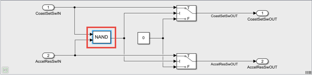
8. Close the harness and examine the contents of the main model. The subystem contents have been updated based on the work done in the harness.
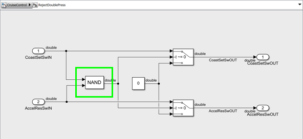
Creating a Test Harness at the Model Level
Now we will create a test harness at the model level. To create the test harness model, do the following:
1. Open CruiseControl.slx - click here.
Examine the state chart to see the Cruise Control logic includes the bug fixes from our previous work:
- Exit condition fix based on work done in Step 0: Ad-hoc Testing
- Calculation order and calibration lower limit fix based on work done in Step 3: Detecting Design Errors
2. We will create a harness with a Signal Builder block for the inputs and a test sequence block for the assessment. To begin the creation of the test harness, select Analysis, Test Harness, Create Test Harness (Cruise Control) .... If the menu selection for Create Test Harness (ComputeTargetSpeed)... appears, you need to de-select the ComputeTargetSpeed subsystem, otherwise you will be creating a harness for the subsystem instead of the model.
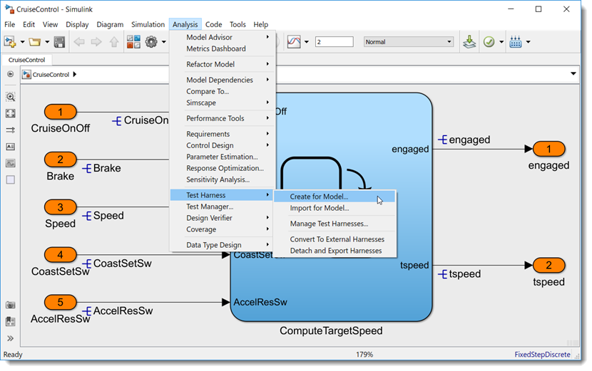
3. In the "Create Test Harness" user interface, enter the name "CruiseControl_Harness_Short".
4. Select "Signal Builder" as the source block and check "Add separate assessment block". Select "OK" when completed.
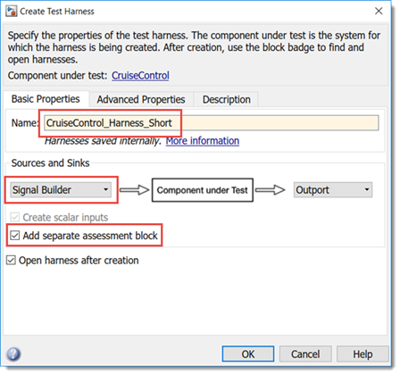
The harness model consists of (6) components:
- Source: in this case a Signal Builder block
- Input Conversion Subsystem: Contains datatype and rate transition blocks. Buses and Vectors are also handled within this subsystem (read-only)
- Unit Under Test: Model reference block containing Cruise Control model
- Output Conversion Subsystem: Contains datatype and rate transition blocks. Buses and Vectors are also handled within this subsystem (read-only)
- Sink: in this case the Outport blocks
- Test Assessment Block: Contains statements to compare the actual outputs to the expected outputs
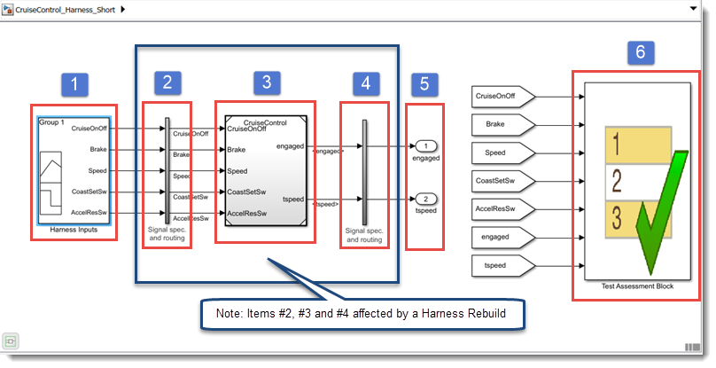
Importing Test Vectors
Based on our algorithm requirements, we have created a test plan document from which we have derived test vectors in an Excel file. This is a common way to define test cases in the industry. Next, we are going to populate the Signal Builder block with test vectors, including expected outputs, from the Excel file.
Do the following:
1. Open the test plan document – click here.

2. Review the 6 test case descriptions. This is only addressing a subset of the requirements for now.
From the test plan, test cases were created by interpreting the test plan into a set time based test vectors and expected results. The test cases were entered into a spreadsheet. Each test case is in its own worksheet and the top labels are the same for all test cases. In a later section of this step we will use a larger set of test cases but for this introduction the smaller set will be more efficient.
3. Open the Excel file that contains the test vectors - click here. For each of the 6 test cases described in the test plan document, there is a corresponding Excel sheet.
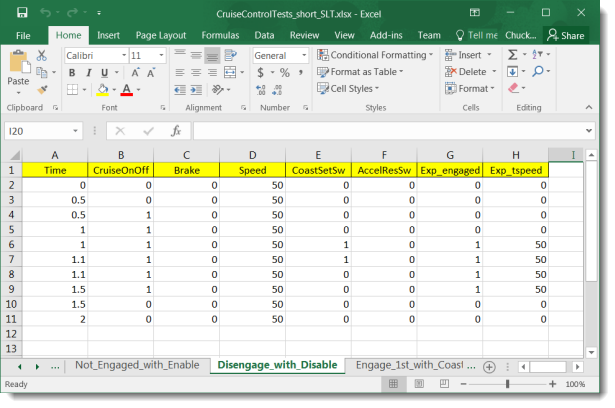
4. Open the Signal Builder block in the test harness and select File, and Import from File.
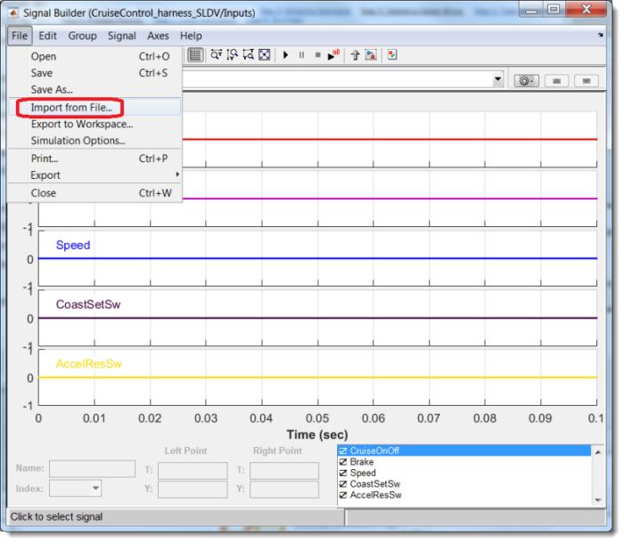
5. Under Select file to import, click Browse, navigate to the Test directory, select the CruiseControlTests_short.xlsx file. Import File dialog will now have the Files to Import textbox populated.
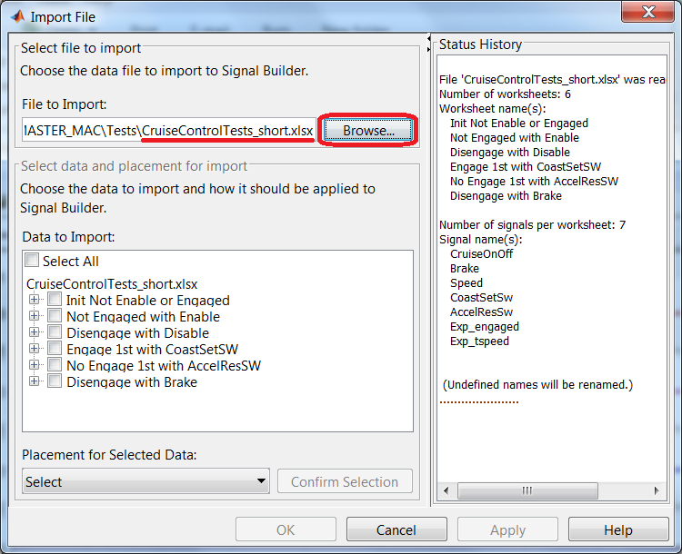
6. After the data has been imported, check the Select All, Replace existing dataset, and Confirm Selection options, and then Apply.
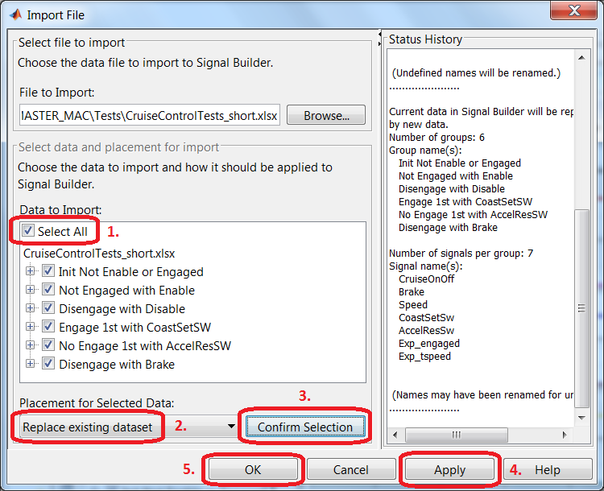
7. Select the No, import without saving option. The Signal Builder block should now have all the Excel data.
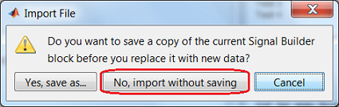
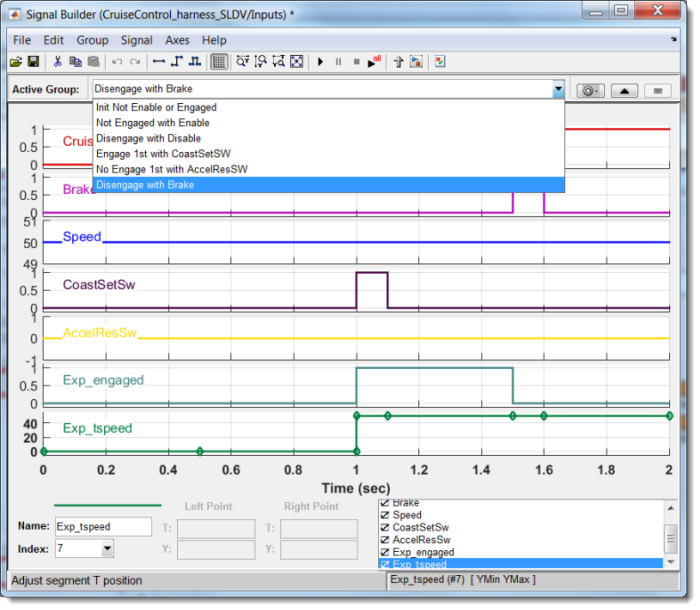
Completing the Test Harness Model
Please note that during the import, the signal lines between the Signal Builder block and the Test Unit have been disconnected. We now need to setup the harness model for easily logging and inspecting of the simulation results. Please do the following:
1. If necessary, reconnect lines from "Signal Builder" to the "Input Conversion Subsystem" block.
2. For the expected output signals: Add Data Type Conversion blocks, set the data type ("boolean" for engaged and "uint8" for tspeed).
3. Label the signals to be Exp_engaged and Exp_tspeed. Terminate expected signals with Goto blocks with tag names matching the signal names.
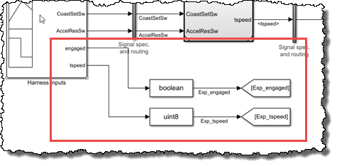
4. Open the "Test Assessment" block and remove all inputs except engaged and tspeed.
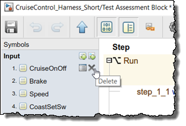
5. Add inputs for Exp_engaged and Exp_tspeed.

6. Uncheck the "When decomposition" to create a simple step type.
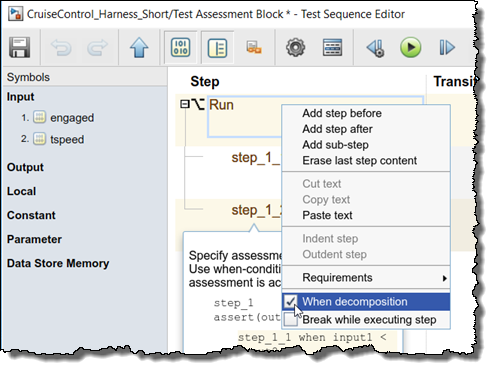
7. Remove all substeps.
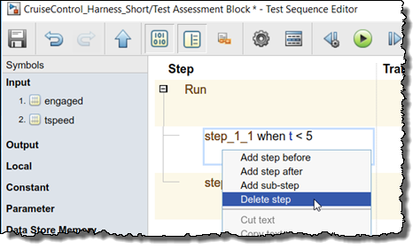
8. Add "verify" statements.
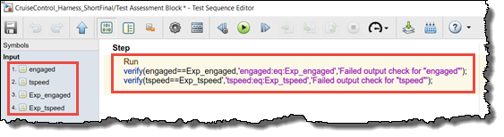
9. Remove all unconnected lines and From blocks to the "Test Assessment Block". For the Exp_engaged and Exp_tspeed signals: Create From blocks and connect to "Test Assessment" block.
You should now have a harness model that looks like the picture below:
To log the signals for easy inspection, please do the following:
10. Select the output signals: engaged, tspeed, Exp_engaged, and Exp_tspeed. And select the input signals: CruiseOnOff, Brake, Speed, CoastSetSw, and AccelResSw.
11. With the (9) signals selected, click on the arrow next to the Siimulation Data Inspector button and select Log Selected Signals. (see picture below).
This will make small "Visualize Signal" icons appear on the signal lines, indicating that these signals will be streamed to the "Simulation Data Inspector".

You should now have a model that looks like this:
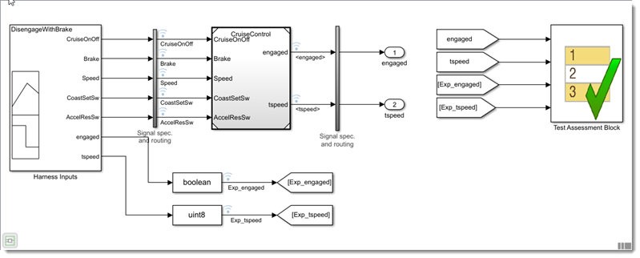
We can now run the simulation and inspect the results.
Note 1: The steps above can be scripted.
Note 2: If you haven't been able to complete the setup above you can open a pre-configured model by clicking here.
Executing the Functional Tests and Analyzing the Results
Simulation Data Inspector (SDI) allows the user to:
- View logged data
- Visually compare different signals within the same simulation
- Compare the same signals between different simulations
- Compare different simulation runs, perfect for Software-In-the-Loop (SIL) and Processor-In-the-Loop (PIL) comparisons Generate HTML reports of comparison results
To run all (6) test cases and view the results in the Simulation Data Inspector, do the following:
1. Clear any runs in the Simulation Data Inspector - click here.
2. Open the Signal Builder block.
3. Click on the Run All button. This will run all (6) simulations in sequence.
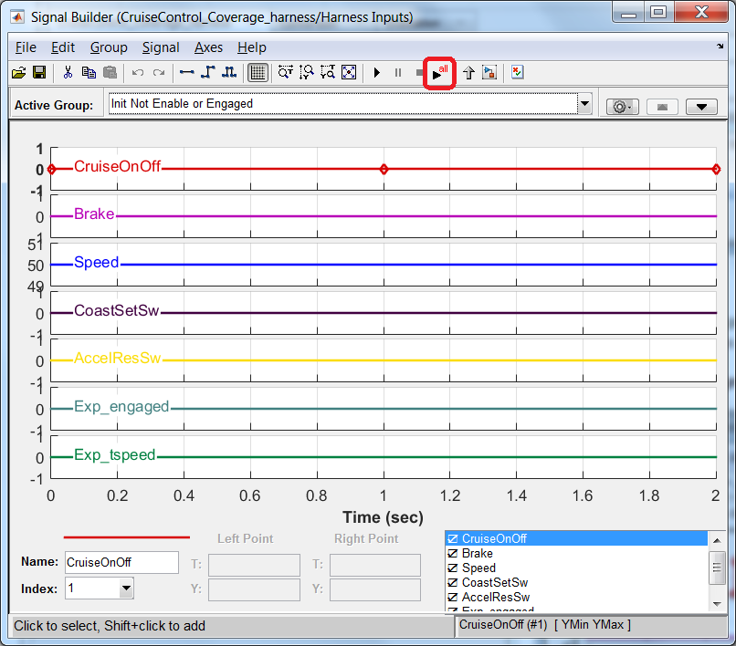
Once the first simulation is complete, the Simulation Data Inspector (SDI) will open, containing the logged data from the simulation. After each run has completed, its simulation data will be added to SDI. When all (6) runs have completed, try to do the following actions in SDI:
4. There is a run for each of the test case with the streamed output signals. Note the "verify" signals that are created in the "Test Assessment" block that provide the pass/fail analysis.
5. Analyze the results in the Simulation Data Inspector for the last test case "Disengage with Brake".
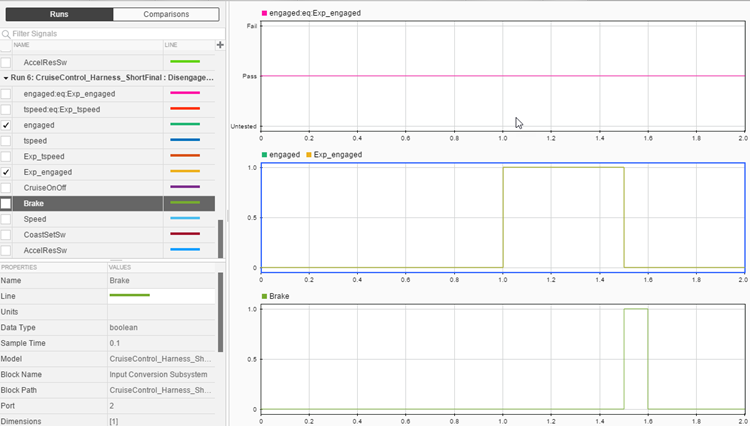
If you needed to compare other signals, the Simulation Data Inspector has a built-in "Comparison" feature for signals. To show this feature we will compare the tspeed signals.
6. Select the "Compare" tab in SDI and select the "Signals" option.
7. Right-click on the "Exp_tspeed" signal, select Compare Signals, Set as Baseline
8. Right-click on the "tspeed" signal, select Compare Signals, Set as Compare To
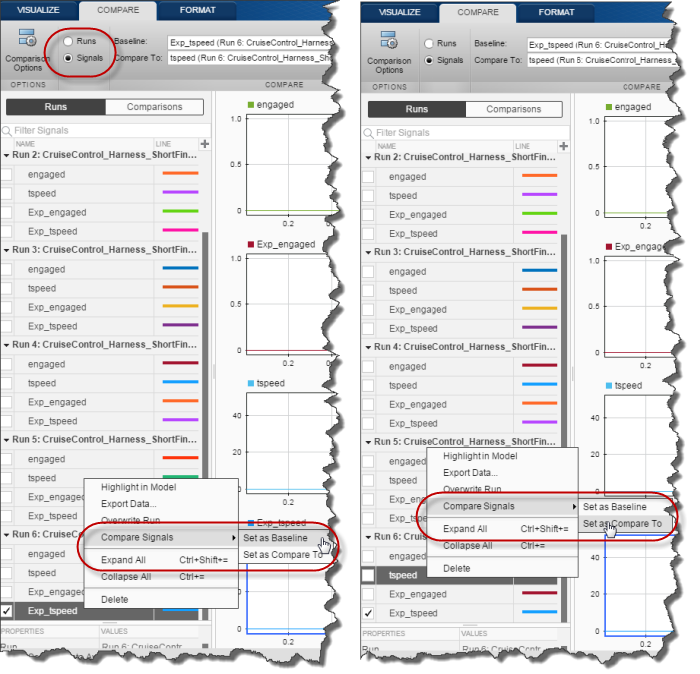
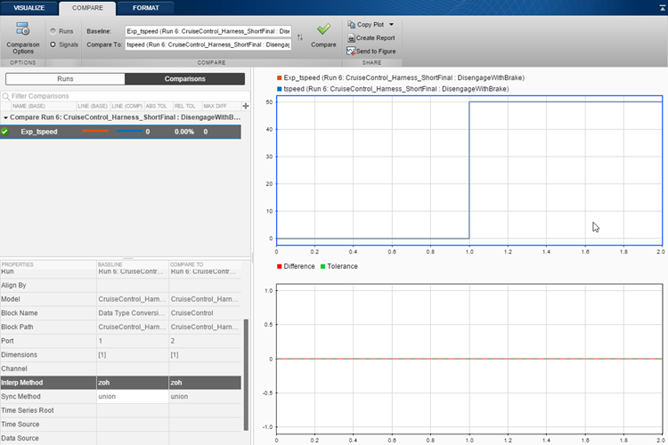
Using "verify" signals and the SDI "Comparison" feature are ways to compare the Test Unit outputs to the expected outputs. But isn't there a way to automate this verification process? Yes, there is! In a later section we will use the more of the Simulink Test features including automated execution, evaluation and reporting.
For more information on Simulation Data Inspector, please refer to the Help documentation.
Test Sequence Blocks for Inputs and Online Assessment
In this section we will use a test harness based on test sequence blocks for creating test inputs along with determining assessments.
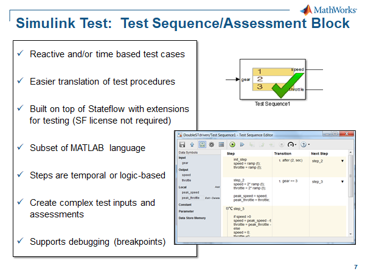
Using Test Sequence blocks will result in a a more "natural language" approach to test case creation. To show this approach we create a test based on the "Disengage with Brake" test case. From the test plan below it is easy to interpret the intention of the "Disengage with Brake" test case:
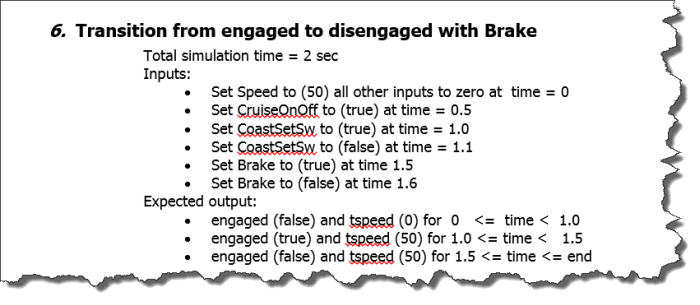
To show how the test sequence blocks can be used, do the following:
1. Open a harness model where these blocks have already been incorporated - click here.
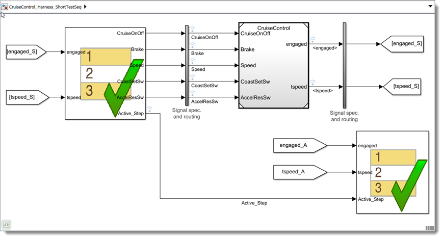
2. Open the "Test Sequence" input blocks to see how the test case inputs have been interpreted.
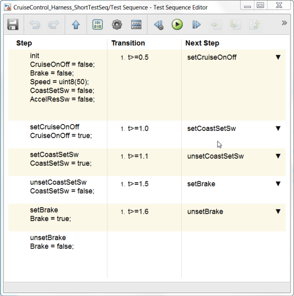
3. Open the "Test Assessment" blocks to see how the test case assessments have been interpreted.

4. Open the Model Explorer to see how the "Active_Step" is signal is configured as an output from the "Test Sequence" inputs block to be used by the "Test Assessment" block.
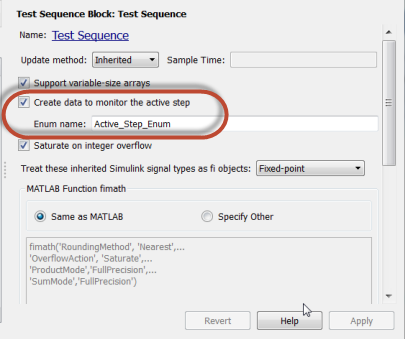
The "Active_Step" is an enumeration signal that enumeration values for all the steps in input block. The "Active_Step" signal is then used by the "Test Assessment" to control the flow through the corresponding evaluation states.
5. Run the test to show the test passes. Open "SDI" to check the verify signals. Also configure "SDI" to "Overwrite Run".
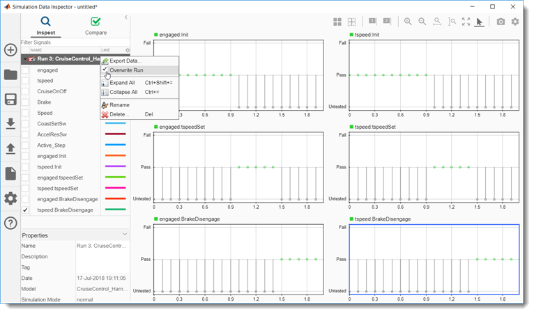
6. Modify the "Test Assessment" block to demonstrate a failure similar to the previous example by changing the tspeed expected value from (50) to (40).
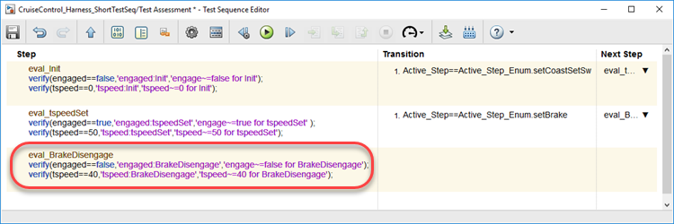
7. Run the test case again. The "tspeed:BrakeDisengage" signal now shows a failure.
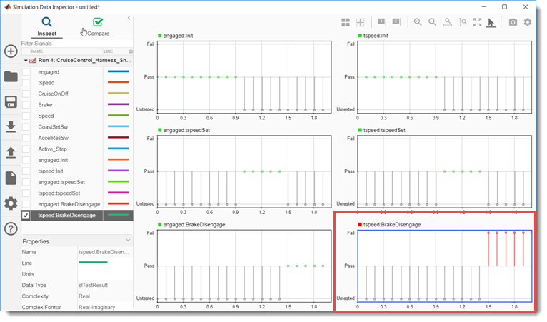
Simulink Test Manager Overview
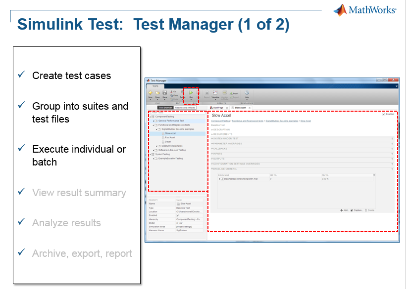
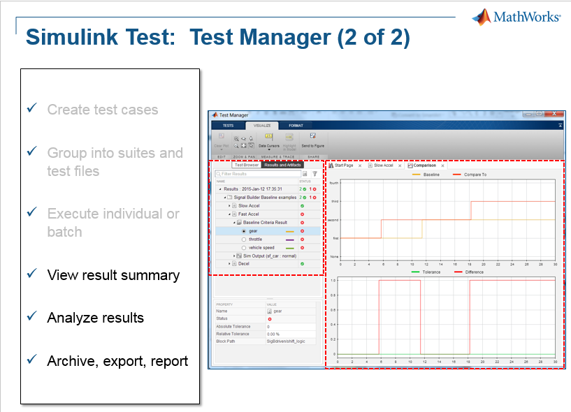
Importing a Test Harness into the Test Manager
We will now show how to automatically create test cases by importing an existing Simulink Test Harness. To show how the test harness import feature can be used, do the following:
1. Open a version of the CruiseControl.slx model with only one test harness - click here.
2. Open the Test Manager by selecting Analysis/Test Manager... from the harness model menu.
3. Create a "Test File from Model" by New, Test File, Test File from Model.
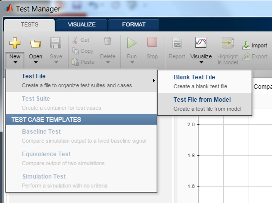
4. Select "Use Current Model". Enter "testSim" for the file in "Location". And select "Test type" as "Simulation".
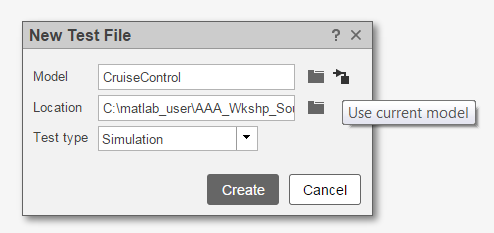
The test cases are automatically created for each Signal Builder test case in the "CruiseControl_Harness_ShortFinal" harness.
5. To run all the test cases, select the "CruiseControl_Harness_ShortFinal" test suite and press "Run".
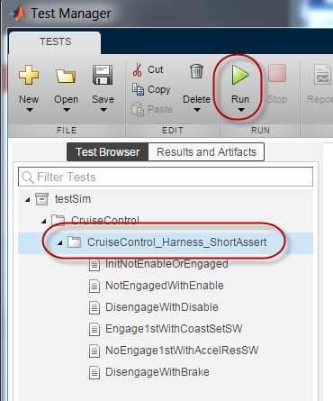
The test results show all test cases passing. The data may be analyzed with embedded Simulation Data Inspector.
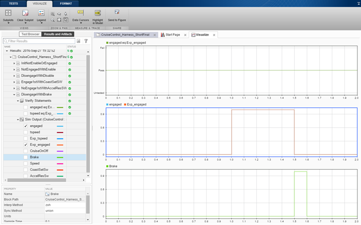
6.In the Signal Builder block of the harness, change the expected tspeed for the "DisengageWithBrake" to (40) at time (1) to fail the test.
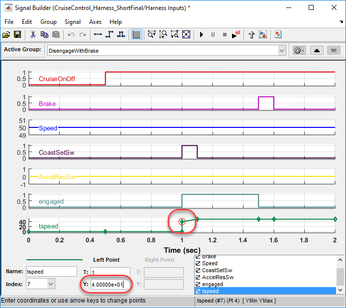
7. Re-run the "DisengageWithBrake" to see the failure displayed in the results.
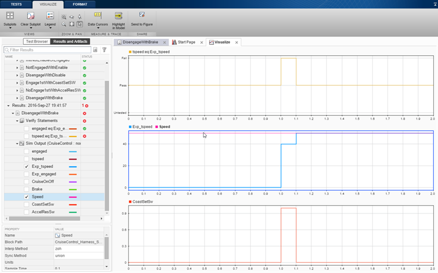
Notice the failure indicated in the results. Also the "assert" block is terminating the simulation. When this happens there are no simulation results to analyze.
Introduction to the Model Coverage Concept
In this section we will focus on measuring structural model coverage, a measurement of how much of the model has been exercised by your test cases. Coverage is an important aspect of Verification and Validation. It can help you in several different ways:
- Determine dead logic "branches".
- Determine if sufficient test vectors have been created
- Determine if the existing requirements are sufficient
The types of structural model coverage that are supported are:
- Decision
- Condition
- Modified Condition/Decision Coverage (MC/DC)
An explanation of the above coverage metrics is shown for a simple model in the picture below:
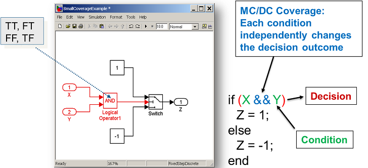
Please note that Simulink Verification and Validation tool offers more model coverage analysis capability than the ones listed above. It can also collect coverage on:
- Signal Range
- Lookup Table
- Signal Size
- Custom objectives using Simulink Design Verifier blocks
Collecting Model Coverage From Functional Test Cases
Besides verifying that the unit under test behaves as expected w.r.t. functional requirements, it's also important to make sure that the test vectors have exercised the model to a high degree, i.e. that we have a high model coverage. For this example we will use the same model but with a more complete set of input test vectors based on the requirements. With this model we would expect the test cases would result in high model coverage beyond the "short" example. To enable the "Test Manager" to measure the model coverage while executing a more complete set of test cases, do the following:
1. Open the CruiseControl.slx model with the high coverage test harness - click here.
Next we will manually create a test case in the Test Manager and use the "Iterations" feature. This feature provides the ability to run all the sets of inputs in "Signal Builder" from a single Test Manager text case.
2. Open the Test Manager, navigate to the "TESTS" tab and select New, Test File, Blank Test File and enter "testCoverage" for the test file name.
3. Navigate to "New Test Case 1". Right-click to delete the default test case.
4. At the test suite level, "New Test Suite 1", right-click to create a new "Simulation Test".
5. For the "Model", select the "Use Current Model Icon" to use the "CruiseControl" model.
6. For the "Harness", select "CruiseControl_Harness_SB" from the dropdown. This harness contains (14) test cases in the "Signal Builder" block.
7. In the "INPUTS" section, check "Signal Builder Group" and select "Refresh signal builder group list, performs update diagram".
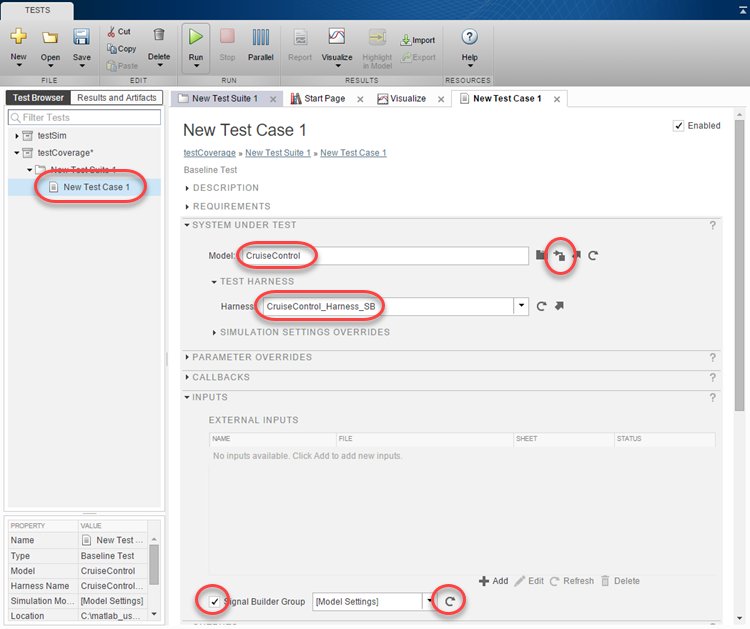
8. Next we will configure the "Test Manager" to collect model coverage during the test execution. Navigate to the test file level and enable coverage for referenced models select "Decision", "Condition" and "MC/DC" for the coverage metrics.
We will now measure coverage for all referenced models (in our case the Test Unit - CruiseControl).
9. In the "ITERATIONS" section, select "Auto Generate" in "TABLE ITERATIONS" subsection.
10. In the "Iterations Templates" dialog, select "Signal Builder Group".
11. Highlight "New Test Case 1", and select the "Run" icon on the toolstrip as before.
After all (14) runs have been completed, the test results will be diplayed in the "Test Browser" but this time the results will include the model coverage metrics. Notice all test cases pass with good but not complete coverage. In the next section we will analyze the coverage metrics to help us understand what is missing.
Using the Model Coverage Results
The Model Coverage analysis contains detailed information about what parts of the model are uncovered by the functional test cases. The user can use this information to either:
- Develop more test vectors for the missing coverage.
- Check to see if there are missing requirements.
- Identify implementation design issues.
The 92% overall decision coverage as shown in the previous section is relatively high for a first attempt. The coverage goal may be as low 80% for a non-safety related applications but often we will attempt to get 100%, particularly if it is safety related.
We can look at a coverage report or show the results directly on the Cruise Control model to perform a detailed analysis. To open the coverage report, you can select the "arrow" under the report column. But we will first show the coverage results on the model, by selecting "CruiseControl" under "Analyzed Model" column.
This provides a quick overview of what and how much coverage is missing. By selecting the transitions in the model we can see in detail what conditions are not covered by our test cases. The coverage results detail shown below provides insight into the completeness of our test cases. We can also open a detailed report by clicking on the transition in the results detail window.
Reviewing the report shows the exit transition is never occurring for the vehicle speed limit check. Likely this is due to either a missing requirement or test case. When we check the requirements we realize that we need to add a few test cases to more completely cover this functional requirement.
The model coloring also shows that we are never exiting from a "hold" button input for the AccelResSw or increase speed button. Based on this we found that we did not have complete requirements with regard to the "hold" function.
We created (5) new test cases based on examining the model coverage results.
1. These test cases have been added to a new "Signal Builder" harness called "CruiseControl_SB_Full". Return to the Test Manager. Select this test harness in the test case configuration.
2. As before, refresh the "Signal Builder Group" to bring in the additional test cases.
3. Select and delete all iterations.
4. Select "Auto Generate" new iterations from the "Signal Builder Group". There should now be (19) iterations.
5. Highlight "New Test Case 1", and select the "Run" icon on the toolstrip as before.
In the Test Manager, the results show the last test case did not pass.
The "Test Assessment" block in the harness is that the implementation outputs engage and tspeed match the expected results. Now that we have a greater number of test cases to cover more of the implementation, we find a design issue. We can also look at the coverage results on the model that may help us locate the source of the design issue.
We need to change the comparison operator for the (2) exit conditions from ">" to ">=" and "<" to "<=".
6. Fix the issue for both exit conditions, or load the fixed version of the CruiseControl - click here
7. Highlight "New Test Case 1", and select the "Run" icon on the toolstrip as before.
With the design fix and the additional test cases we now have 100% coverage and no assertion fail messages to the command window.
This shows a typical workflow where we iterated by analyzing the coverage results, add new functional est cases and eventually get to 100% coverage. Also realize that we know 100% coverage is possible because we fixed the error based on the order of integer calculations using Design Error Detection from previous section.
But, what if our logic is very complicated, and even after several iterations, we were only able to get to, say, 95% coverage? Is there anything we can do to speed up this iterative process? Yes, with Simulink Design Verifier, the user can also ask the tool to ignore the coverage already achieved by the functional test vectors and generate the missing test cases to achieve 100% coverage. The user can then e.g. use these test cases as "hints" to reverse engineer functional tests from them. This will be covered in the step Test Generation.
Summary
In this method we have shown a function verfication workflow:
- Creating an "internal" test harness within the implementation model
- Importing test cases from a spreadsheet into the model
- Adding a subsystem to do automatically check the outputs
- Analyzing the results with the built-in Simulation Data Inspector (SDI)
- Using test sequence blocks for creating a "natural language" test case
- Automating the execution of test case with the test Manager
- Measuring the completeness of the test cases with model coverage
- Using coverage and output comparisons to isolate and debug issues
We were again able to find and fix these issues early in our development process, increasing confidence in our design. We will continue to answer more of the questions in the next steps with our structured and formal testing framework for securing the quality, robustness and safety of our cruise controller.
When you are finished, close all models and files - click here.
Go to Step 5: Test Case Generation - click here.